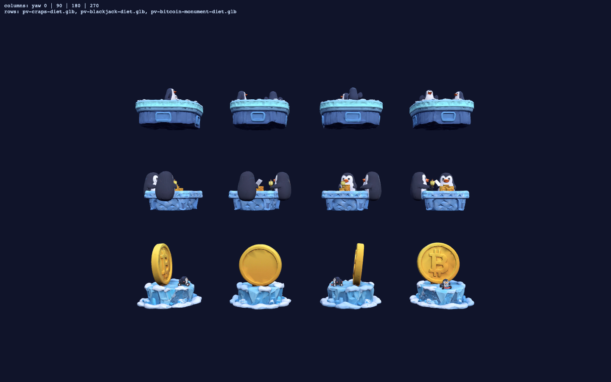
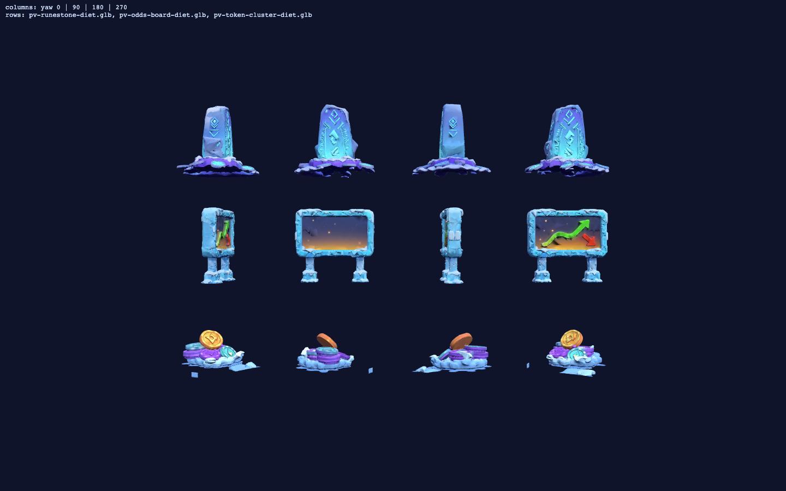
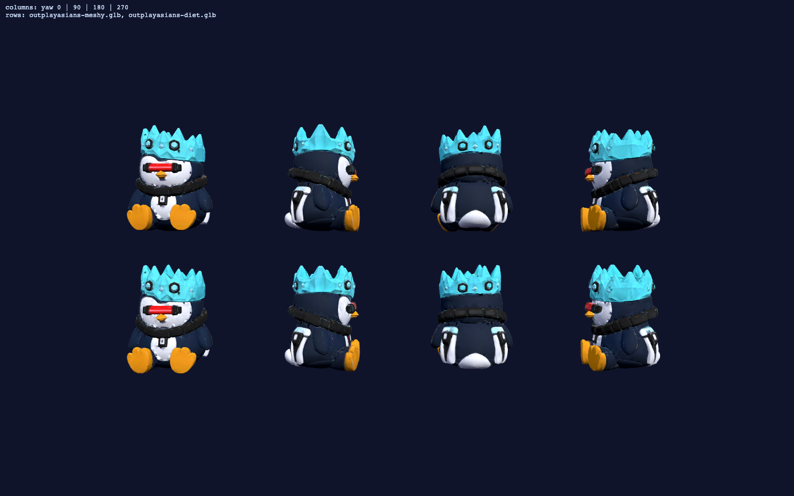

Your list, verbatim: "crypto tokens and polymarket betting, as well as penguins playing craps on the side of the track, maybe blackjack, bitcoin mostly, BRC tokens, runes ect". Six candidates below (tripo_3d, detailed). Pick ANY SUBSET — picks get the ship diet + orientation lab + trackside mounts on Penguin Village. All abstract/no-text by design (the "polymarket" board is a generic prediction-market chart — no brand marks).


Converted from your PNG per your call ("I have the PNG only we need to turn it into a 3d image") — ice crown, laser visor, chain collar all survived. Judge the LIKENESS against your model; if it's right, he becomes the W3 finish-line crosser (and roster if you want him playable). Upload recorded as your per-asset opt-in under H0 §2.2.

Provenance: tripo jobs 190f5980 / a66f80dc / 084c7efe / bc4a0b3d / dca5f6aa / 16106dbf (30cr) + Meshy cd3d91d7; raw GLBs local-only, diets committed in tmp/w3-pv-props/.